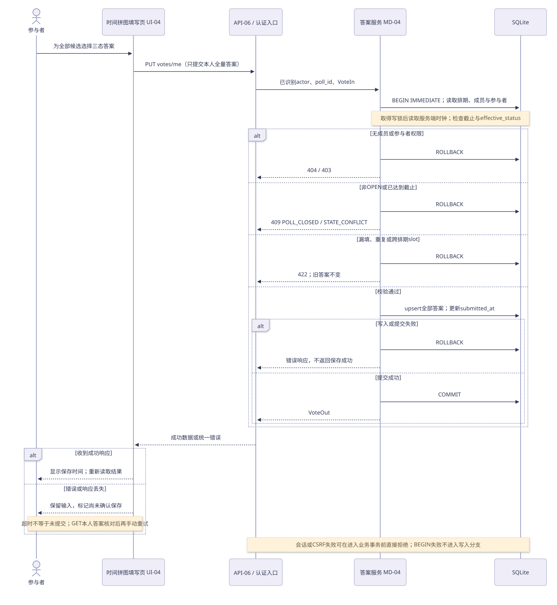
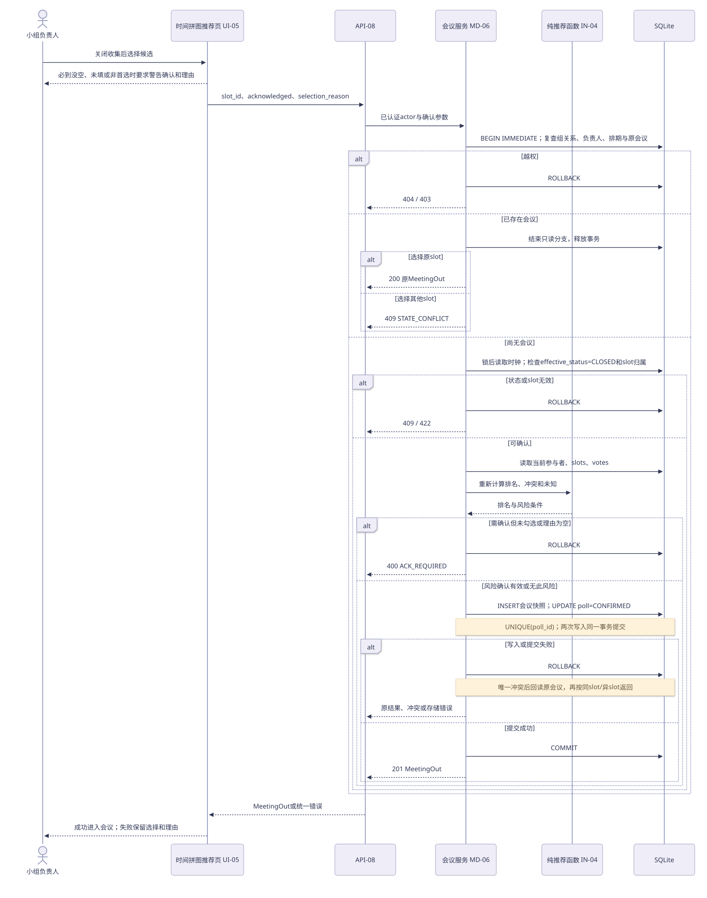
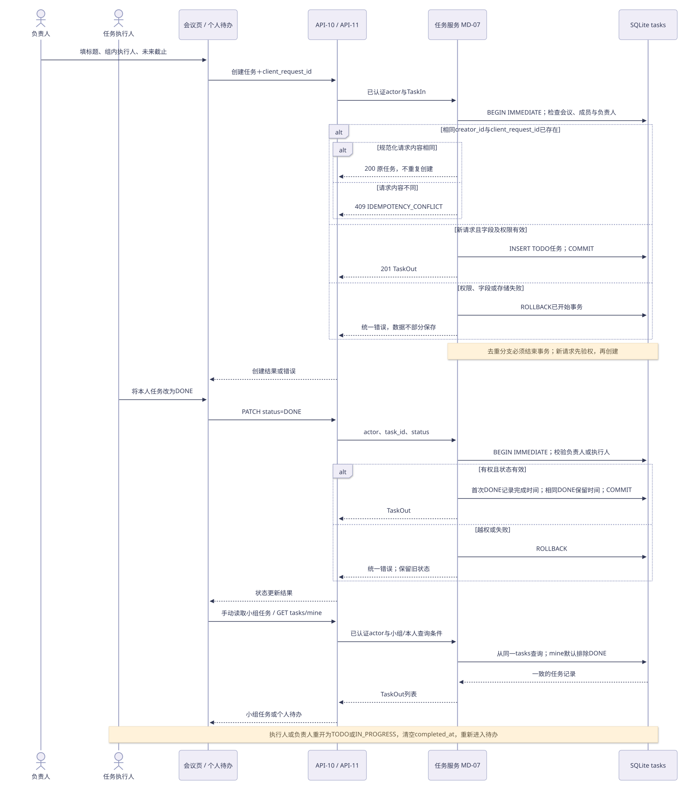

MEETFLOW / T03 · 2026-10-26
让需求、原型和设计对上。
需求V1.2 / 系统设计V1.0 T03勘误 / 原型P0.3。图示表达计划中的正式系统；原型的演示与简化项见15号核对记录。点击图片可单独打开矢量图并缩放，PNG可直接放入报告。
用例视图
MF-01 · MF-02 · MF-03 · MF-04 · MF-05 · MF-06 · MF-07 · MF-08 · MF-09 · MF-10 · MF-11 · MF-12 · MF-13
排期状态图
MF-03 · MF-04 · MF-05 · MF-09
任务状态图
MF-11 · MF-12
数据实体关系图
MF-01 · MF-02 · MF-03 · MF-04 · MF-06 · MF-09 · MF-10 · MF-11 · MF-12 · MF-13
全量填写与保存时序图
MF-05 · MF-06 · MF-13
确认会议与重试时序图
MF-08 · MF-09 · MF-13
任务创建、状态与待办时序图
MF-11 · MF-12 · MF-13